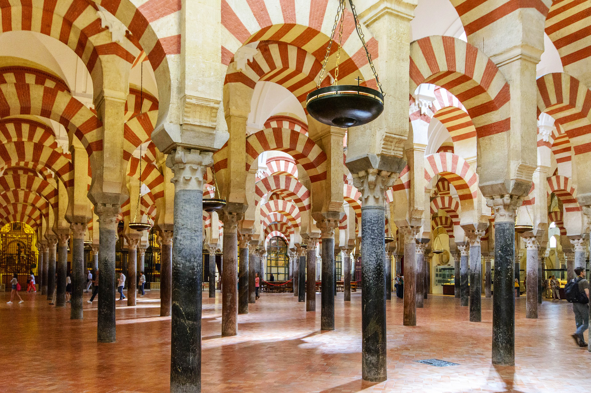
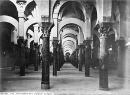
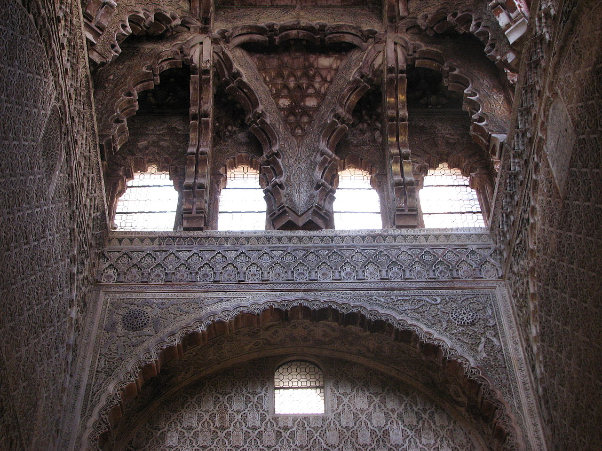

Mezquita

Todos los musulmanes adultos tienen la obligación de celebrar oraciones, o ṣalāt, al menos cinco veces por día. Aunque en algunas mezquitas pequeñas que acogen a pequeñas congregaciones solo se llevan a cabo algunos de estos rezos, en la mayoría se realizan las cinco oraciones diarias preceptivas: antes del amanecer (faŷr), a mediodía (ẓuhr), por la tarde (ʿaṣr), tras la puesta de sol (magrib), y a la noche (ʿišā'). No es obligatorio para los musulmanes orar en el interior de una mezquita, pero en los hadiz se declara que la oración comunitaria en una mezquita es más virtuosa que la oración en privado.17
Todos los musulmanes adultos tienen la obligación de celebrar oraciones, o ṣalāt, al menos cinco veces por día. Aunque en algunas mezquitas pequeñas que acogen a pequeñas congregaciones solo se llevan a cabo algunos de estos rezos, en la mayoría se realizan las cinco oraciones diarias preceptivas: antes del amanecer (faŷr), a mediodía (ẓuhr), por la tarde (ʿaṣr), tras la puesta de sol (magrib), y a la noche (ʿišā'). No es obligatorio para los musulmanes orar en el interior de una mezquita, pero en los hadiz se declara que la oración comunitaria en una mezquita es más virtuosa que la oración en privado.17
Interior

Originariamente todo el interior del edificio era una gran sala hipóstila, utilizada como sala de oración, con la única excepción de los habitáculos existentes en el doble muro de la quibla. Aparte de su uso religioso que incluía los cinco rezos diarios y el especial del viernes, la sala también se utilizó como centro educativo y de la sharia durante el gobierno de Abderramán I y de sus sucesores.
Originariamente todo el interior del edificio era una gran sala hipóstila, utilizada como sala de oración, con la única excepción de los habitáculos existentes en el doble muro de la quibla. Aparte de su uso religioso que incluía los cinco rezos diarios y el especial del viernes, la sala también se utilizó como centro educativo y de la sharia durante el gobierno de Abderramán I y de sus sucesores.
Capillas

Está compuesto por la capilla de Villaviciosa; la capilla Real, contigua a la capilla de Villaviciosa; y la capilla de San Pablo, situada a espaldas de la capilla Real. Todas estas construcciones se hallan encastradas en las naves islámicas a lo largo de casi todo el lado norte de lo que fue la ampliación de Alhakén II.
Está compuesto por la capilla de Villaviciosa; la capilla Real, contigua a la capilla de Villaviciosa; y la capilla de San Pablo, situada a espaldas de la capilla Real. Todas estas construcciones se hallan encastradas en las naves islámicas a lo largo de casi todo el lado norte de lo que fue la ampliación de Alhakén II.